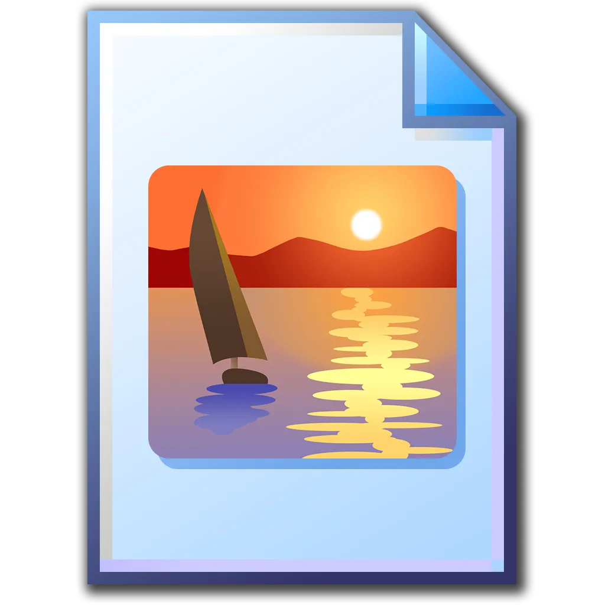

Video Portfolio
AUDITORIUM
SUBWAY ENCOUNTER
Photography Portfolio

P1050387.JPG
P1050304.JPG
P1050303.JPG
P1050293.JPG
P1050286.JPG
P1050277.JPG
P1050271.JPG
P1050270.JPG
P1050234.JPG
P1050224.JPG
P1050220.JPG
P1050211.JPG
P1050209.JPG
P1050200.JPG
Graphic Design Portfolio
anderramirez cover.png
te voy a extrañar.jpg
, pero no sé si x ti o x mí.png
I mean it.png
Manhattannn.png
SAT; R&W.png
Juli.png
love.png
🧟.png
About Ander Ramírez
Ander Ramírez
Artist & Creative Director
Ander Ramírez is a multidisciplinary artist and creative director based in Mexico. His work explores the intersection of video, photography, and graphic design, blending digital nostalgia with contemporary aesthetics.
Silver Surfer, Silver Surfer in the flesh — Silver Surfer in the flesh
Contact
Get in Touch
- Gmail: anderramirezj@gmail.com
- Instagram: @anderramirezj
- Telegram: @anderram